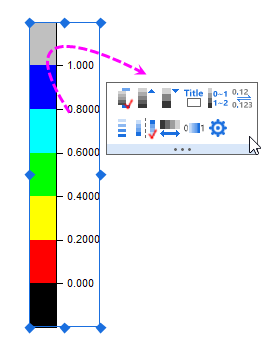
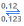

Hinweis: Dieses Tutorial ist mit dem Ordner Column and Stack Column des Projekts "Tutorial Data" verbunden: <Origin EXE Folder>\Samples\Tutorial Data.opj.
- Gehen Sie zur Registerkarte Muster, setzen Sie die Transparenz auf 70 % und die Breite des Randes auf 2:
- Gehen Sie zur Registerkarte Abstand, wählen Sie Col(C):"Size" im Auswahlmenü Breite (in %) und geben Sie 8 für den Skalierungsfaktor ein. Die Werte in Spalte C bestimmen die Breite der Säulen in der Zeichnung.
- Gehen Sie zur Registerkarte Farbpalette und klicken Sie auf die Überschrift Ebene. Setzen Sie die Ebene von 0 auf 1 und das Inkrement von 0,2 im Dialog Ebenen festlegen.
Bestätigen Sie mit OK, um den Dialog Details Zeichnung zu schließen.
- Klicken Sie doppelt auf eine Achse (Winkel oder Radial), um den Dialog Achsen zu öffnen. Gehen Sie zur Registerkarte Skalierung im Zweig Winkel. Setzen Sie den Wert für Große Hilfsstriche auf 45 und die Anzahl für Kleine Hilfsstriche auf 2.
- Gehen Sie zur Unterregisterkarte Format auf der Registerkarte Beschriftung der Hilfsstriche des Zweigs Winkel - Äußere. Aktivieren Sie das Kontrollkästchen Fett.
- Wechseln Sie zur Registerkarte Gitternetze im Zweig Winkel. Ändern Sie den Stil der Hauptgitternetzlinien in Strich.
- Wechseln Sie zur Registerkarte Linie und Hilfsstriche im Zweig Winkel - Äußere. Ändern Sie die Dicke der Linie in 1,5.
- Klicken Sie auf die Schaltfläche Konfiguration der Radialachsen
 rechts oben im Dialog, um den Dialog zu öffnen. Wählen Sie im Dialog 0 90 180 270 in der Auswahlliste Winkelliste.
rechts oben im Dialog, um den Dialog zu öffnen. Wählen Sie im Dialog 0 90 180 270 in der Auswahlliste Winkelliste. - Gehen Sie zur Registerkarte Skalierung im Zweig Radial. Legen Sie die Skalierung auf 0 bis 1 fest.
- Wechseln Sie zur Unterregisterkarte Format auf der Registerkarte Beschriftung der Hilfsstriche und
- wählen Sie dann Radial - Inneres 1, ändern Sie die Größe in 12, aktivieren Sie das Kontrollkästchen Fett und geben Sie für Drehen (Grad) eine 0 ein.
- Wählen Sie Radial - Inneres 2, ändern Sie die Größe in 12 und aktivieren Sie das Kontrollkästchen Fett.
- Wählen Sie sowohl Radial - Inneres 3 als auch Radial - Inneres 4 und deaktivieren Sie dann Zeigen.
- Gehen Sie zur Unterregisterkarte Anzeige auf der Registerkarte Beschriftung der Hilfsstriche des Zweigs Radial - Inneres 1. Wählen Sie Benutzerdefiniert in der Auswahlliste Anzeige und geben Sie ,2* im Textfeld Benutzerdefiniertes Format ein.
- Wechseln Sie zur Registerkarte Titel und markieren Sie alle Radialachsen auf der linken Seite. Deaktivieren Sie das Kontrollkästchen Zeigen.
- Gehen Sie zur Registerkarte Gitternetze im Zweig Radial. Deaktivieren Sie das Kontrollkästchen Zeigen für die Nebengitternetzlinien. Klicken Sie auf OK, um die Einstellung zu speichern, und schließen Sie den Dialog.
- Gehen Sie zur Registerkarte Linie und Hilfsstriche und wählen Sie alle Radialachsen. Ändern Sie die Dicke der Linie in 1,5. Setzen Sie den Stil auf Innen & Außen und die Länge auf 5 sowohl für die Großen Hilfsstriche als auch für die Kleinen Hilfsstriche.
- Wechseln Sie zur Registerkarte Spezielle Hilfsstriche für Radial - Inneres 1 und setzen Sie den Achsenanfang auf Zeigen und das Achsenende auf Verstecken. Wählen Sie Radial - Inneres 2 und setzen Sie den Achsenanfang und das Achsenende auf Verstecken. Klicken Sie auf OK, um die Einstellung anzuwenden, und schließen Sie den Dialog.

- Klicken Sie auf die Schaltfläche Erste und letzte Ebene ausblenden , um die erste und letzte Ebene zu verbergen.
- Klicken Sie auf die Schaltfläche Dezimalstellen  und wählen Sie 1 aus der Auswahlliste aus, um die Dezimalstellen der Beschriftungen auf 1 zu setzen.
- Klicken Sie auf die Schaltfläche Separates Layout
 , um die Farbblöcke separat anzuzeigen.
, um die Farbblöcke separat anzuzeigen.